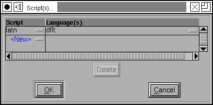
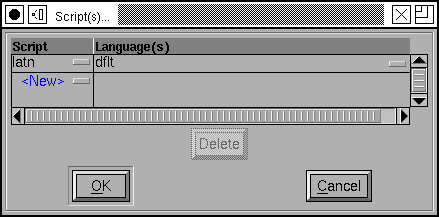
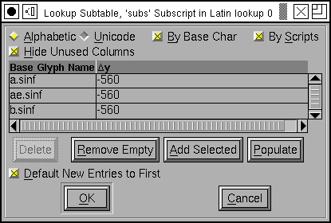
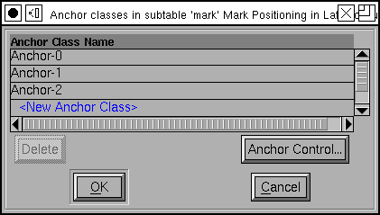
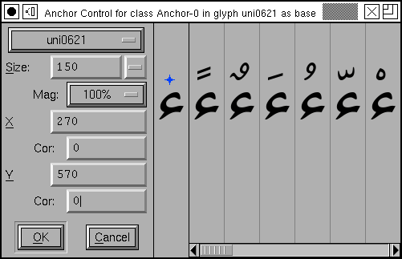

You
use the Lookups pane of the Element->Font Info
command to control OpenType lookups.
You
use the Lookups pane of the Element->Font Info
command to control OpenType lookups.
"The question is," said Humpty Dumpty, "which is to be master --" (you or the word)-- Lewis Carroll
Through the Looking-Glass
You
use the Lookups pane of the Element->Font Info
command to control OpenType lookups.
A lookup is a collection of commands that provide a text layout program with a transformation to apply on the input glyph stream. A lookup might specify how to form ligatures or how to do kerning, or any of a number of other things.
Every lookup is composed of a number of subtables. Often this complexity is not needed and many lookups will contain just one subtable.
Every lookup is named and every subtable is named. No two lookups may have the same name, nor may any two subtables.
There are two major classes of lookups, those that reside in the GSUB table and substitute one glyph (or several) with another (ligatures) and those which live in the GPOS table and position one glyph relative to another (kerning).
The order in which the lookups and subtables appear in this dialog is important. This is the same order in which they will be applied. All lookups in the GSUB table will be applied before any lookups in the GPOS table.
There are buttons on the side for reordering the lookups. Up, Down, Top, Bottom should be obvious. You can also drag and drop lookups to reorder them. The [Sort] button will sort lookups depending on the cannonical order of the features attached to them. This will not always be the desired ordering, but it is a place to start.
Lookups are applied in the order listed here. Which lookups will be applied depends on the script, language, and what features have been enabled (this will be controlled by the text layout engine, and perhaps ultimately by the user).
Within a lookup, the subtables will be applied in order until one of them actually does something. Then no further subtables will be executed. Note that this is different from the way lookups behave -- all active lookups will always be applied, but only one subtable in a lookup will be.
Suppose for example that you have a kerning class, and a few kerning pairs. If you put both of these into one lookup, with the kerning pairs in the first subtable and the kerning class in the second, then if a kerning pair matches the input stream the kerning class will not be applied (so you can have special cases that override the data in the kerning class).
On the other hand if you put the pairs in one lookup, and the kerning class in another lookup, then both would be applied. And the resultant motion would be the sum of the two.
 The
The
[Add Lookup] and [Edit
Metadata] buttons will bring up a dialog that allows you to control
the attributes of the lookup. Every lookup has a lookup type (here "Single
Substitution") which specifies broadly what kinds of things this lookup can
do.
A lookup may be associated with one or more feature tags each of which may be active for various scripts and languages. You may edit the feature tag directly, or you may click on the little box and get a list of feature tags identified by their "friendly names" (so instead of 'smcp' you would see "Lowercase to Small Capitals").
Similarly you may edit the script and language list directly, or you may press on the rectangle to get a friendlier dialog (see below).
Every lookup is associated with a set of flags which control its behavior. The "Mark Class:" field is only active if there are Mark Classes defined, and the "Mark Set:" field is active if there are Mark Sets defined. Mark classes and sets are very similar, with mark sets being the newer (largely unsupported as I write in spring 2009) but more versatile of the two. These provide an extension of the Ignore Marks flag -- if you specify a mark class (or set) then all marks will be ignored except those in the class (or set).
Every lookup must be named. You may assign the name as you wish -- except that it must not be blank and must be unique. No two lookups may have the same name. (If you intend to use feature files, then lookup names should be: less than 31 characters, composed of ASCII alphanumerics, underscores and periods -- no spaces).
For ligatures you have the option of specifying whether you want these ligatures output in an afm file.
 The script
dialog allows you to enter scripts and languages. Again you may edit these
directly or press on the little rectangles to get a list of friendly names.
If you choose to bring up the language dialog you may choose more than one
language in it (use the control key to make disjoint
selections).
The script
dialog allows you to enter scripts and languages. Again you may edit these
directly or press on the little rectangles to get a list of friendly names.
If you choose to bring up the language dialog you may choose more than one
language in it (use the control key to make disjoint
selections).
After you have created a lookup you may add subtables to it. In most cases you will only need to create one subtable, but for contextual or kerning lookups you may need two or more (the second would contain a set of kerning classes, while the first would contain any special cases).
The [Add Subtable] button will prompt you to name the new subtable,
and will then bring up a dialog to allow you to edit the commands, the data,
of that subtable. You may also bring up this dialog by selecting an existing
subtable and double clicking on it (or by pressing the [Edit Data]
button). The format of the dialog will depend on the lookup type.
|
|
Many of the basic substitution dialogs are very similar. Most of the dialog contains a list glyph names (one per line) on the left, and a list of substitution glyph names on the right. So in the example above left, the 'smcp' feature will map the glyph named "a" to the glyph named "a.sc", "b" to "b.sc" and so on. The multiple and alternate substitution dialogs allow a list of replacement glyph names on the right. In a multiple substitution the glyph will be replaced with all the glyphs named on the left, while in an alternate substitution the word processor will provide the user with a menu from which to pick a glyph. The ligature substitution is backwards in that the replacement glyph is the one on the left -- if the glyphs on the right appear together and in order then they will be replaced with the glyph on the left. So if an "f" is followed by an "f" then it will be replaced by an "ff" ligature glyph.
The [Populate] button will fill the dialog with all glyphs in
any of the scripts for which this dialog is active. If FontForge can figure
out a default replacement glyph then it will in provide that as the default
value (if it can't figure out a good replacement it will just leave the right
side blank).
The [Add Selected] button works in much the same way, but will
only add glyphs selected in the font view.
The [Default Using Suffix:] button will behave similarly (except
it will only insert entries for which FontForge can find a replacement, and
glyph name of that replacement will be found by appending the specified suffix
to the glyph name of the base glyph).
The [Remove Empty] button will remove any entries with no
replacement glyph(s). The [Delete] button will delete the currently
selected row.
The various radio buttons and check boxes at the top of the dialog control how the base glyphs are ordered in the display -- either in <>Alphabetic order (by glyph name) or in Unicode code point order. If [] By Base Char is checked then composed characters like "Egrave" will be ordered closer to "E" than to "Eth". If [] By Scripts is checked then glyphs of one script system will be grouped together no matter how they are ordered alphabetically or unicodally, thus "A" would be grouped with "B" and not with "Alpha".
The contextual substitution dialog is quite complicated and is discussed in its own section. These lookups can only live in an OpenType font, not in an Apple Advanced Typography font.
The state machine substitution dialog is quite complicated and is discussed in its own section. These lookups can only live in an Apple Advanced Typography font.
|  |  |
The single glyph positionioning lookup can potentially be quite complex, but generally in any specific case very little of that complexity is used and the dialog can be simplified. The lookup allows four different adjustments to each glyph:
In addition to this you may provide pixel adjustments that apply to specific point sizes. At small pixel sizes (such as those used for screen fonts) the rounding error introduced by converting from em-units to pixels may be as large as the movement itself. In the example at right, if the 'subs' feature is applied to the glyph "a.sinf" that glyph should be moved downward by -560 em-units. Then if the pixel-size of the rasterization is 10 pixels, it should be moved down a further pixel, while if the pixel-size is 12 it should be moved up a pixel.
The [] Hide Unused Columns check box will toggle between the two views above (well, not quite, I added two device table adjustments in the image on the right, so the adjustment column would remain after checking the checkbox).
Often all the adjustments in a subtable will be the same (the ones here are) so the [*] Default new entries to first check box will give all new entries the same value as the first line.
 Kerning
format dialog
Kerning
format dialog
When you create a kerning subtable you will first be asked whether you want to create a kerning class subtable, or a kerning subtable with a list of glyph pairs.
In either case, FontForge will ask if you want to it to automagically fill up the sub-table with guesses at appropriate kerning values. This is called "autokern"ing.
In addition, FontForge can guess appropriate glyph classes for kerning by classes.
If you aren't interested in autokerning and want to do everything by hand, most of this dialog is irrelevant, you are only interested in the two radio buttons at the top and the [OK] button at the bottom.
But if you are interested in autokerning, you need to tell FontForge how closely it should kern glyphs, and what glyphs to kern. In addition if you want FontForge to pick kerning classes for you, you must specify the maximum allowable amount of cumuliative error between two glyphs before they must be in separate classes.
The Default Separation and Min Kern fields are
used in AutoKerning. The goal of kerning to to make the optical separation
between all glyphs to be constant, and the Default Separation
field specifies that desired value. The Min Kern value
is simply to prevent the dialog from filling with useless junk. If AutoKerning
suggests that two glyphs should be kerned by 1 em unit then this won't make
any difference to the human eye and there is no point in including it. So
if the kerning value (in absolute value) suggested by AutoKern is less than
Min Kern then fontforge will ignore that value. Selecting []
Touching makes AutoKerning work in a slightly different way, instead
of trying to make the optical distance be the desired value this attempts
to make the minimum separation be the desired value (This is rarely useful,
but occasionally people want to set text where the letters actually touch
one another). The [] Only kern glyphs closer flag means that
FontForge will only generate negative kerning offset, which will move glyphs
closer together.
Below these fields are two panes which look rather like fontviews. Here you
may specify the selections you want to describe the glyphs being autokerned.
There are two of these panes because you usually have a slightly different
set of glyphs of interest on the left and right sides of a kerning pair.
In English, a capital letter will rarely occur in the middle of a word, so
you don't need it on the right side of a kerning pair. (Of course there are
exceptions: "FontForge" uses an internal capital, but that is rare and if
you want to save space in your font tables you can ignore it). Similarly
the closing quote character will almost never be on the left side of a kerning
pair.
 The kerning class dialog is described in its
own section, while the kerning pair
subtable dialog is described below.
The kerning class dialog is described in its
own section, while the kerning pair
subtable dialog is described below.
Each entry in the dialog specifies a pair of glyphs and then adjustments that may be made to each of those glyphs. Each glyph may be adjusted by any (or all) of the four adjustments mentioned above, so there are eight potential adjustments (and possibly device tables for each of those).
In practice kerning tends to use only one of those 8 adjustments. For left to right text this is generally the horizontal advance of the first glyph (x_adv#1), for right to left kerning the horizontal advance of the second glyph is used instead, and for vertical top to bottom text the vertical advance of the first glyph (y_adv#1). Again, the [] Hide Unused Columns may be used to simplify the dialog.
Each time you enter a new combination, FontForge will try to guess a kerning
offset for you (autokerning). So the Separation text fields
have a similar meaning to that which they had above -- with the exception
that the Min Kern and Only kern closer fields will
be ignored for individual pairs.
For more elaborate usage, [AutoKern] button will look at all
combinations of glyphs in all scripts in the feature attached to this lookup.
The [AutoKern Selected] button will look at all combinations
of glyphs which are selected in the fontview (Neither of these will override
existing combinations).
Below the value matrix is a visual display of the currently selected kerning pair. You may adjust the kerning value by moving the second glyph around.
You may select a pixel size at which to rasterize your glyphs. You may also
request to see that rasterization magnified (Note: This is different from
just rasterizing at twice the pixelsize, each pixel will be twice as big
and the effects of rounding errors will be more obvious). Magnification is
probably only useful if you are working on device tables for screen
pixelsizes.
Changes made to kerning pairs are tracked by a font level undo system. If you have made no changes to the lookup then no new undo record will be created. The undo system will track only the minimal amount of information needed to recreate the old kerning table. This is useful when you are editing a very complex kerning table which might have thousands of kerning pairs and requires many megabytes of storage just for the kerning table.
The font level undo system will allow you to undo all of the edits you have made in a single interaction with the kerning class dialog. For simplicity, let us consider the scenario where you open the kerning class dialog and edit a few kerning pairs, then select the OK button. We will refer to this as a single "round" of editing.
If you have only changed two pairs in a round of editing then only two pairs are remembered by the undo system so that the kerning table can be restored to how it was before your performed this last round of edits.
To undo the changes you have made in a round, select the Undo Font Level menu option from the edit menu in the font view window.
Marks (diacritical accents, vowel marks, etc.) may be attached to base glyphs using anchors. In the latin script, the grave, accute and circumflex accents might all attach to their base glyph at the same point, so these would all live in one anchor class. The dot below accent attaches at a different point and would need a different class.
You may create as many anchor classes as you like. One mark may not be in multiple attachment classes, but a base glyph may.
Anchor classes may also be used in cursive systems such as Urdu where the text slopes up the page. Each glyph has an entry point and an exit point, and the entry of a glyph will be attached to the exit of the preceding glyph.
Marks may also be attached to marks. Vietnamese will often stack accents on top of one another.
Finally, ligatures may have several attachment sites, one for each ligature component.
The
above dialog may be used to create a set of classes for each type of anchor
subtable, then click on the [Anchor
Control...] button to view the marks anchored to bases glyphs.
One glyph is selected (in this case a base) and its anchor point is displayed relative to it (the blue star in the first pane after the controls). Subsequent panes show all possible mark attachments.
You may adjust the pixelsize of the display and the magnification factor (again the magnification factor is most useful if you are looking at small pixelsizes.
You may provide device table adjustments for each pixelsize.
The contextual substitution dialog is quite complicated and is discussed in its own section. These lookups can only live in an OpenType font, not in an Apple Advanced Typography font.
The state machine substitution dialog is quite complicated and is discussed in its own section. These lookups can only live in an Apple Advanced Typography font.